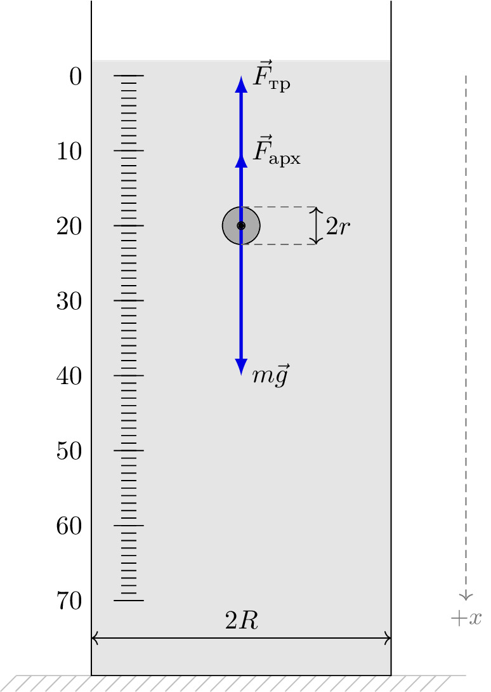

pre.tex
\documentclass[tikz]{standalone}\input{pre.tex}\begin{document}\begin{tikzpicture}[
force/.style={>=latex,draw=blue,fill=blue, very thick},
axis/.style={densely dashed,black!60,font=\small},
interface/.style={draw=gray!60,
postaction={draw=gray!60,decorate,decoration={border,angle=-135,
amplitude=0.3cm,segment length=2mm}}},
]
\def\w{40mm}
\def\h{90mm}
\draw[interface] (-10mm,0) -- (\w+10mm,0);
\draw (0,\h) -- (0,0) -- (\w,0) -- (\w,\h);
\foreach \c in {0,10,...,70}{
\draw (10 mm, 80 mm - \c mm) node[left, xshift=-10mm] {\c};
\draw (0.3,80 mm - \c mm) -- (0.7,80 mm - \c mm);
}
\foreach \d in {10,11,...,80}{
\draw (0.4,\d mm) -- (0.6,\d mm);
}
\draw [axis, ->] (\w+10mm,\h-10mm) --(\w+10mm,10mm) node [below] {$+x$};
\coordinate (C) at (\w/2, 60mm);
\draw [fill=black!30] (C) circle (2.5mm);
\draw[force, ->] (C) -- ++ (0, 10mm) node [right] {$\vec{F}_\text{арх}$};
\draw[force, ->] (C) -- ++ (0, 20mm) node [right] {$\vec{F}_\text{тр}$};
\draw[force, ->] (C) -- ++ (0, -20mm) node [right] {$m\vec{g}$};
\draw [fill=black] (C) circle (0.5mm);
\draw [<->] (0,5mm) --(\w,5mm) node [above, pos=0.5] {$2R$};
\draw[axis] ($(C)+(0,2.5mm)$) --($(C)+(10mm,2.5mm)$);
\draw[axis] ($(C)+(0,-2.5mm)$) --($(C)+(10mm,-2.5mm)$);
\draw[<->] ($(C)+(10mm,2.5mm)$)--($(C)+(10mm,-2.5mm)$) node [right, pos=0.5] {$2r$};
\draw [fill=black, opacity=0.1] (0,0) -- (0,\h-8mm) -- (\w,\h-8mm) -- (\w,0) -- cycle;
\end{tikzpicture}\end{document}